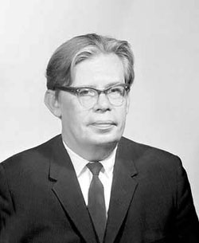

Оргкомітет
Секції і супутні конференції
Список учасників
Програма конгресу
Детальна інформація
(оргвнесок, поселення, та ін.)
|
|
УКРАЇНСЬКИЙ
МАТЕМАТИЧНИЙ
КОНГРЕС − 2009
(до 100-річчя від дня народження
Миколи М. Боголюбова)
м. Київ, Інститут математики НАН України,
27−29 серпня 2009 р.
E-mails: congress2009@imath.kiev.ua (основний)
ukr.math.congress@gmail.com
дзеркала сайту: Інститут математики, Київ та
Українська група користувачів системи GAP
|